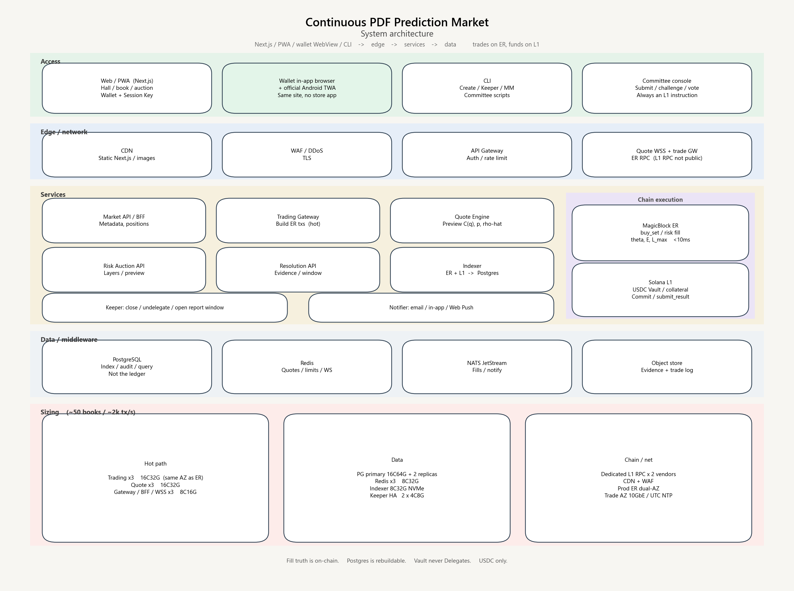

System architecture
System Architecture — Continuous PDF Prediction Market
| Item | Content |
|---|---|
| Version | 1.3 |
| Product counterpart | product-specification.md v1.6 |
| Scope | Web / PWA / CLI, business services, network, chain, server resource allocation |
This document only answers “which clients and machines make up the system, and how requests flow.” Frameworks and algorithms are in technical-architecture.md.

1. Overview
The system has six layers. Trading uses a low-latency path. Funds and settlement use Solana L1. Business queries use centralized services.
┌─────────────── Access Layer ────────────────┐
│ Web/PWA Wallet WebView CLI Committee Console │
└───────────┬──────────────────┬──────────────┘
│ HTTPS / WSS │ Trading Session
▼ ▼
┌──────── Edge ────────┐ ┌──────── Trading Path ────────┐
│ CDN / WAF / Gateway │ │ MagicBlock ER RPC │
└──────────┬───────────┘ └────────────┬─────────────────┘
▼ ▼
┌──── Business Service Cluster ────┐ ┌──── On-chain Execution ────┐
│ Quotes / Accounts / Auctions │ │ buy_set on ER │
│ Market create / Committee / Clear│ │ L1 funds and settlement │
│ Index / Notify / Keeper │ └───────▲────────────────────┘
└──────────┬───────────────────────┘ │ Commit / submit_result
▼ │
┌──── Data and Middleware ────┐ ┌──── Solana L1 ────────┐
│ PG / Redis / Object Store │ │ Vault / Collateral / PDA │
└─────────────────────────────┘ └───────────────────────┘
Principles:
- Fill truth lives on-chain (ER trades; L1 funds and finalization)
- Display and search live on the server (index database, WebSocket push)
- Results must land on-chain via
submit_result; there is no off-chain private rewrite of the PDF - One prediction book maps to one Vault and one risk-auction book
2. Clients
2.1 Web client
For traders, Risk LPs, and market browsing. In the browser:
| Module | Responsibility |
|---|---|
Market lobby / |
Search / page every indexed board (family and status, not a second create taxonomy) |
Trading board /m/[id] |
Interval pick and football typed lines; coverage warning; implied PDF $p_k$ / score heatmap (not $E$); pre-bet ticket; rules strip; pending fill; public $x^*$ / $\rho$ after close — product §8.1, §14.6 |
| Wallet chrome | Connect → SIWS → deposit → open / renew / revoke Session; revoke ≠ disconnect |
Risk auction /auctions, /auction/[id] |
Published layers only; rates; collateral; current $L_{\max}$ |
LP book /lp |
This wallet’s $D_i$, $H$, premium, surplus claim |
Positions /portfolio |
Tickets, Vault cash, estimated $\hat\rho$, settlement / refund claim |
Create /create |
Distribution family + full field list; then the reviewer opens the board |
Committee /committee |
submit_result / evidence / challenge / vote (same Next.js app until it earns a split) |
Ops /ops |
Read-only lag, coverage, Vault identity, $C_P$ pool, keeper heartbeat. No Vault withdraw |
Deploy: Next.js. Static assets via CDN; APIs via the gateway. Trades are client-signed in the browser, then go Trading Gateway → ER RPC; they do not traverse the ordinary business API on the hot path.
Web wallet integration (locked):
@solana/wallet-adapter-react, Wallet Standard; must integrate Phantom, Solflare, Backpack- After connect, do SIWS; the BFF issues a JWT (queries / push only; never a substitute for on-chain signatures)
- Deposit / withdraw / open Session: the main wallet popup signs L1
- In-play
buy_set: the Session Key signs; Trading Gateway only forwards - Framework, IDL, and Session details are in
technical-architecture.mdsections 2 and 5
2.2 Mobile (not a store App)
No App Store / Play, and no Flutter / RN. Phones use the same Next.js stack:
- Safari / Chrome, or Add to Home Screen PWA
- In-wallet browser (Phantom / Solflare) opening this site — the primary mobile path
- Android home-screen icon: official-site TWA APK, not via Play
- In-play boards: WebSocket in the foreground; chrome Inbox for close / commit / settle alerts
There is only one BFF / gateway contract. Distribution is in technical-architecture.md sections 2.2 / 2.9.
2.3 CLI
For ops, market making, Keeper, and committee scripts. It does not replace a wallet App. Keeper writes (close / Commit / Undelegate) live here; the Next.js /ops page is read-only (SRS FR-UI-27 / FR-UI-28).
| Command group | Use |
|---|---|
market create-* |
Create markets (football / macro / elections / daily price / binary) |
market close / undelegate |
Halt trading; write state back to L1 |
trade buy-set |
Scripted orders, market making |
risk bid |
LP quotes and cancels |
resolve submit / challenge / vote / finalize |
Committee and bots |
keeper run |
Halt trading, lock risk, remind of the reporting window |
index status |
Indexer lag, ER health |
The CLI talks directly to chain RPC + the admin API, using the ops hot wallet or a multisig.
2.4 Committee console
A standalone Web console (can also be embedded in the main site): markets awaiting report, evidence attachments, challenge list, votes, audit log. All writes still end as on-chain submit_result / challenge / vote.
3. Service split
| Service | Responsibility | Hot path? |
|---|---|---|
| API Gateway | Auth, rate limit, routing, TLS termination | Yes (queries) |
| BFF / Market API | Market metadata, templates, candlestick-style PDF snapshots, user position queries | No |
| Trading Gateway | Session Key, assemble ER transactions, quote preview (does not write the final ledger) | Yes |
| Quote Engine | Read-only $\theta$ snapshot; compute $C_S(q)$, $p_S$, $\hat\rho$ | Yes |
| Risk Auction API | Layers, order book, quote pre-check; fill instructions still go on-chain | Medium |
| Resolution API | Reporting window, evidence upload, challenge state; assemble on-chain instructions | No |
| Indexer | Subscribe to ER + L1 logs; write Postgres | Yes (consume) |
| Keeper | Time-based halt, undelegate, open the reporting window; writes inbox events | No, but must be highly available |
| Object Store gateway | Committee evidence, event graphics, rules PDFs | No |
On-chain programs (not traditional microservices, but part of the system):
| Program | Chain | Responsibility |
|---|---|---|
continuous_pdf_market (Anchor) |
L1 create / ER trade | Market create, Delegate, buy_set, $\theta$ / $E$ |
risk_auction |
L1; may use ER during the trading period | Layers, quotes, lock collateral |
vault |
L1 only | USDC custody, fees, payout, draw LP |
resolution |
L1 only | submit_result, challenge, vote, finalize |
Funds programs are not Delegated to ER, so the high-speed layer never holds withdrawal authority.
4. Network and traffic
4.1 Paths
| Traffic | Path | Latency target |
|---|---|---|
| Pages, images | User → CDN | — |
| Market list, positions | User → WAF → Gateway → Market API → PG/Redis | < 150 ms |
| Real-time PDF / book | User → WSS → Quote / Indexer push | < 50 ms |
| Place order | User → Trading Gateway → ER RPC | < 10 ms in-chain execution (excludes wallet confirmation) |
| Market create | User / CLI → L1 RPC | Slot confirmation |
| Halt write-back | Keeper → MagicBlock Commit / Undelegate → L1 | Seconds |
| Report / settlement transfer | Committee / Keeper → L1 RPC | Slot confirmation |
4.2 Domains and isolation
| Domain | Use |
|---|---|
www / app |
Web |
api |
Queries and non-hot trading |
quote / ws |
Quote WebSocket |
trade |
Trading Gateway (may colocate with ER) |
er-rpc |
MagicBlock nodes (terminals may reach them only via the Gateway) |
l1-rpc |
Self-hosted or vendor Solana RPC (not exposed naked to public users) |
ER and Trading Gateway deploy in the same region, same-city low latency; no transoceanic hop.
4.3 Security boundary
- WAF: DDoS, CC, geo and rate
- Gateway: JWT / wallet-signed session, IP rate limit
- Trading: Session Key allowance, per-market rate, anomalous $q$ intercept
- L1 RPC: private network + vendor allowlist only
- Committee: hardware or multisig + audit log
- Keys: ops hot wallets in HSM / cloud KMS; they do not enter application images
5. Data landing
| Store | What it holds | Who writes |
|---|---|---|
| Solana L1 PDA | Market params, Vault, collateral, $x^*$, payout results | Chain programs |
| ER state | $\theta$, $E$, in-play order traces | ER transactions |
| PostgreSQL | Indexed markets, fills, positions, auction book, committee audit | Indexer |
| Redis | Quote cache, coverage ratio, WS presence, rate limits | Quote / Gateway |
| Object store | Evidence attachments, static assets | Resolution / CDN origin |
PG is the query primary, not the fill ledger. Reconciliation follows the chain; the index is rebuildable.
6. Servers and resource allocation
Size for “50 concurrent live markets, peak 2,000 orders/s, 10,000 quote subscriptions.” Beyond that, scale Trading / Quote / WS horizontally by group.
6.1 Application nodes
| Role | Spec (per box) | Count | Notes |
|---|---|---|---|
| API Gateway | 8C 16G, 25G NIC | 3 | Multi-AZ |
| Market API / BFF | 8C 16G | 3 | Stateless |
| Trading Gateway | 16C 32G, same AZ adjacent to ER | 3+ | Must not contend for cores with indexing |
| Quote Engine | 16C 32G | 3 | Memory holds $\theta$ snapshots |
| WS gateway | 8C 16G, high connection count | 3 | Separate process from Quote |
| Risk / Resolution API | 4C 8G | 2 | May share a cluster with BFF but deploy separately |
| Indexer | 8C 32G, NVMe | 2 (primary + hot standby) | Must not drop slots |
| Keeper | 4C 8G | 2 (primary/standby, different AZs) | Halt and reporting window |
| Committee console | 4C 8G | 2 | May fold into BFF |
| CLI jump host | 2C 4G | 1 | Ops VPN only |
6.2 Data nodes
| Role | Spec | Count |
|---|---|---|
| PostgreSQL primary | 16C 64G, 1T NVMe | 1 |
| PostgreSQL replica | Same as primary | 2 (reads + backup) |
| Redis cluster | 8C 32G | 3 primary 3 replica |
| Object store | Cloud OSS / S3 | Cross-region redundancy |
| Logs / traces | Dedicated cluster or managed | Retain ≥ 30 days |
6.3 Chain and RPC
| Role | Config |
|---|---|
| Solana L1 RPC | Paid dedicated nodes from ≥ 2 vendors (primary + standby); do not mix with public free RPCs |
| MagicBlock ER | Production ER nodes per vendor SLA; if self-hosted, 16C 64G, same-city active-active |
| Transaction send | Trading Gateway connection pool pinned to ER; on failure, degrade to a user prompt; do not automatically fall back to L1 for hot trades |
6.4 Network and edge
| Item | Config |
|---|---|
| CDN | Global static; dynamic APIs need not be origin-cached |
| WAF / DDoS | One entry layer; separate policies for trade/ws |
| Bandwidth | Edge ≥ 5 Gbps burst; 10 GbE inside the trading AZ |
| Certificates | Wildcard + automatic rotation |
| Timezone / NTP | NTP on all nodes; observe_ts / close_ts always UTC |
6.5 Capacity rules of thumb
| Resource | Rule of thumb |
|---|---|
| Per-market grid 1024 + 121 score cells | Quote memory on the order of tens of MB of snapshots per market |
| 2,000 tx/s | Three 16C Trading Gateway boxes can hold; add groups beyond that |
| PG | Trade tables partitioned by market_id, archived monthly |
| Redis | Quote keys have short TTL; Indexer/ER subscriptions are the source |
7. Environments
| Environment | Chain | Use |
|---|---|---|
| local | solana-test-validator + local ER simulation | Development |
| staging | Solana devnet / testnet + test ER | Integration, committee drills |
| production | Solana mainnet + production ER | Real money |
Three isolated config sets: RPC, wallets, PG, Redis, and object buckets must not cross-contaminate.
8. Observability and on-call
- Metrics: ER latency, order success rate, indexer slot lag, coverage ratio, Vault balance, Keeper heartbeat
- Logs: structured; trace IDs from Web through Gateway
- Tracing: full sample or head-based sample on Trading and Quote
- Alerts: indexer lag, ER unreachable, Keeper missed close, reporting window with no submission, Vault imbalance
9. Funds safety
Funds safety is the floor of public trust. It does not rely on TEE, Postgres, or Light compression.
9.1 Where the money sits
| Asset | Custody | Forbidden |
|---|---|---|
| User margin, trading proceeds | L1 vault PDA, Circle USDC Token Account only |
Into ops hot wallets, into ER withdrawable accounts, accept SOL or other coins, in-protocol FX |
| Risk LP collateral | This market’s L1 Risk Vault (same USDC mint) | Count $C_R$ before lock; fund collateral with SOL or another mint |
| Fees | Booked at trade time on the platform fee ledger; claim_fees to the platform UserVault at any time. Never $C_P$ |
Mix a fill’s fee into that same board’s $C_{\max}$ or $C_P$ |
| Platform adjustment fund pool $C_P^{\mathrm{pool}}$ | One protocol L1 vault PDA (Circle USDC). Boards only receive $C_P^{\mathrm{alloc}}$ at settlement | Per-board $C_P$ wallets; unlimited guarantee; admin_withdraw; bake into LMSR |
| Unsettled surplus | Stay in this market’s Vault; split by $\alpha$ after settle |
Arbitrary ops withdrawal |
Users first vault.deposit. ER only mirrors available balance; halt and L1 netting follow. An ER crash cannot make money “disappear”: L1 custody remains. In-play $\theta$ must not be discarded on the theory that “if it was not Committed it never happened” — $\theta$ is restored by replaying the trade log (see section 10.5).
9.2 Authority
- Program upgrades: multisig + timelock (e.g. 48h); pause withdrawals during the
vaultupgrade window - There is no
admin_withdraw. The only outflows are: user withdrawal of unused margin, settlement payout, LP draw, $C_P$ allocation, surplus split, platform fee claim, VOID refund - Keeper / committee keys can only send allowed instructions; they cannot touch Token account owners
- Session Key: per-market allowance, expiry, revocable; if lost, loss is capped at the authorized allowance
- Same invariant tests before and after upgrades: $\sum$ amounts paid $\le C_{\max}$, Vault token balance = sum of the books
9.3 What happens to money in an incident
| Incident | Funds |
|---|---|
| Trading / Quote / PG down | Untouched. Money is on L1 |
| ER node dead | User principal is on L1; confirmed fills replay from the log per 10.5, restoring $\theta$ and positions. Do not roll receipted fills back to “never happened” |
| Program bug | Timelock pause + multisig; the insurance fund does not replace Vault accounting |
| Malicious committee proposal | Challenge window; after passage, $x^*$ still pays by the rules; no extra back-door transfer |
Reconciliation: hourly, the Indexer aligns each market’s Vault balance with $\sum$ margin $+R_{\mathrm{net}}+$ undrawn collateral. On mismatch, alert and halt that market’s outflows.
10. Data storage and node-crash recovery
10.1 Data tiers
| Tier | Data | Storage | If lost |
|---|---|---|---|
| S0 funds and terminal state | Vault, collateral, $x^*$, settled payouts | L1 only | Must not be lost; the chain provides replicas |
| S0.5 confirmed fills | Each buy_set / auction fill receipt and order |
ER replication log + object-store trade log + Indexer persist; L1 periodically commits trades_root |
Must not vanish because a single node crashed. See 10.5 |
| S1 in-play hot state | $\theta$, $E$, $L_{\max}$, ER margin mirror | ER memory; periodic Commit back to L1 | Process death may lose memory; must be replayable from S0.5 |
| S2 query projection | Fill list, position view, auction book, listing identity, listing applications / review log, board comments, fill-journal $S$ | PG via sqlx in Rust Market API / Indexer (DDD repos; Next.js does not connect) | Rebuildable from S0.5 / chain logs (listings/journal are off-chain helpers). Applications/review/comments are catalog-only (FR-UI-42–45), not settlement. PG down only means temporarily unqueryable |
| S3 cache | Quotes, coverage ratio, sessions | Redis | Recompute if lost; RPO is not measured |
| S4 evidence and static | Attachments, rules text | Object store + hash on L1 | If files are lost, verify by hash; buckets must be cross-region |
Principle: S2/S3 must never be the ledger. Recovery order is L1 checkpoint → replay the trade log → rebuild PG — not “write balances back from a backup DB,” and not “treat uncommitted fills as never happened.”
Application persistence is DDD + sqlx + associated-type Context: docs/architecture/ddd-sqlx.md. listing, listing_application, review_log, market_comment, fill_journal, and market_proj live in Postgres (local machine service or production). Memory is a cache; restart reloads from PG. Comments are accepted only for an approved indexed board. Listing applications need reviewer approve, then the reviewer signs on-chain create (reviewer is owner).
10.2 Backups
| Component | Backup | RPO / RTO (target) |
|---|---|---|
| L1 | The chain itself + self-hosted RPC from two vendors | RPO=0 (confirmed transactions) |
| ER | High-frequency state-root snapshots + last L1 Commit | See 10.3 |
| PG | Streaming replica + daily local + cross-region PITR 7 days | RPO ≤ 1 min, RTO ≤ 15 min (promote replica) |
| Redis | Do not back up as a ledger; AOF only to speed warmup | RTO ≤ 2 min start with empty cache |
| Object store | Cross-region replication, versioning, deletion protection | RPO ≈ 0 |
| Keys | Multi-region KMS; Keeper primary/standby in different AZs | If lost, rotate; do not copy private keys from disk |
10.3 How each node comes back
| Node | Recovery |
|---|---|
| Gateway / BFF / App | Stateless; Kubernetes restart is enough |
| Trading Gateway | No local ledger; reconnect to ER; in-flight signed txs follow chain receipts (at-least-once) |
| Quote | Rebuild memory from Redis or ER/Indexer $\theta$ snapshot; do not treat stale cache as fills |
| Indexer | Replay from last_slot via Yellowstone; drop from read traffic if lag exceeds the threshold |
| Keeper | Standby takes over if primary dies; instructions are idempotent (the same close_ts cannot close twice) |
| PG primary | Promote replica; apps switch connection string |
| ER | Hot standby takes over the same Delegated accounts; if that fails, replay from “$\theta$ at last L1 Commit” + “trade log after that Commit” through the last receipted fill before the crash, then Delegate to a new ER. See 10.5 |
| Committee console | Stateless; proposals live on L1 |
ER must have a Commit cadence: do not wait only for close_ts. In production, at a fixed interval (e.g. every 30–60s or every N fills) checkpoint $\theta$, $E$, trades_root, and the margin mirror back to L1. Commit is a checkpoint that speeds recovery; it is not the criterion for whether a fill exists.
10.4 Drills
Once a month: kill Indexer, kill Keeper, kill PG primary, kill a single ER. Verify Vault books unchanged, every receipted fill still present, $\theta$ matches replay, the index can catch up, and halt still fires. An unrehearsed recovery plan does not exist.
10.5 Fills must survive node crashes
Nodes can die. Fills that have already been established for the user cannot.
$\theta$ is not the raw ledger; it is a function of the prior plus the fill sequence:
$$\theta_t = \mathrm{Update}(\theta_0,\; \mathrm{trade}_1,\ldots,\mathrm{trade}_t)$$
So as long as the fill sequence exists, hot state can be replayed. The earlier line that “fills between two L1 Commits may be lost” is withdrawn: the Commit interval only affects where replay starts, not whether a fill exists.
10.5.1 When a fill is considered established
All of the following must hold before the user sees “filled” and before the fill enters the log:
- ER (or L1) has executed the
buy_set/ risk-auction fill instruction - A signed receipt is returned:
tx_sigor ER sequence number,market_id, wallet,nonce, set / quantity, amount paid, $E$ increment, post-execution state root - The receipt has been written to a replication-log majority (at least 2 copies, different machines; see below)
Gateway reports only pending until the receipt is durable. If the user refreshes and sees pending, retry with the same nonce; on-chain idempotency prevents double spend. A request without a receipt was never a fill; that is not the same as “a fill was lost.”
10.5.2 The log has at least two paths that do not share fate
| Replica | What it writes | If it fails alone |
|---|---|---|
| ER replication log (primary + sync standby, or MagicBlock sequencer log) | Per-fill order, state root | Standby takes over and continues the same sequence |
Trade-log object store (append-only per market_id) |
The same receipt; history is immutable | Indexer / new ER replays from here |
| Indexer → PG | Query projection | Replay from the log; the user’s list is temporarily empty; the fill is still there |
| Client receipt | The user can present it locally | In a dispute, check against the log / chain |
L1 does not require every fill to land on mainnet immediately. Periodic Commit includes the trades_root (Merkle) up to that point, to audit that “the log was not rewritten after the fact.” Funds still only recognize the Vault.
Forbidden:
- Store fills only in a single ER’s memory
- Store fills only in PG and “guess” from the DB when ER dies
- Tell the user it filled before the receipt is in hand
- On recovery, revert receipted fills to unfilled (unless the whole market is VOID under product rules, and that is a governance decision, not the crash default)
10.5.3 How fills survive each failure
| What failed | Fills |
|---|---|
| Gateway / BFF / App | No books. Receipts live in the ER log and on the client |
| Quote | No fills. Restart and pull $\theta$ |
| Indexer or PG | Fills are in the log and ER. Catch up slots and replay; the list comes back |
| Redis | Irrelevant |
| Single ER | Standby continues from the same replication log; or a new ER replays from the L1 $\theta$ checkpoint + the log. User positions, amounts paid, and order are unchanged |
| Entire ER cluster + object store gone at once | This is a dual-active datacenter-class incident. Intervals whose trades_root is already Committed can still be audited; the last few seconds without a committed root require manual reconciliation of client receipts against L1 margin netting. The design goal is that this never happens: the log bucket and the ER log must be in different AZs / different vendors |
Replay rule: execute official crates/math in strict nonce / sequence order; the resulting $\theta$, $E$, $L_{\max}$ must match the state root of the last receipt before the crash. On mismatch, halt the market and alert; do not delete fills to force alignment.
Funds side: margin deductions for filled trades follow the receipt; L1 Vault nets at the next Commit / halt. Do not wipe bought positions and refund because a node died, unless the user actively closes under product rules or the whole market is VOID.
11. Light Protocol: rent savings for cold data only; not for the hot path or funds
Light (ZK Compression) puts account data in a compression tree and leaves only a hash on-chain; updates need a validity proof and UTXO-style invalidation of old leaves. Throughput and CU fit “many accounts, rarely updated,” not a book that mutates $\theta$ every second.
| Data | Use Light? | Reason |
|---|---|---|
| Vault / collateral / transfers | No | The funds path cannot depend on proof latency, the Forester queue, or RPC-supplied leaf data |
In-trade $\theta$, $E$, buy_set |
No | Every fill would need a proof + a larger transaction, which conflicts with the ER <10 ms target |
| Active market-parameter PDA | No | Halt, Delegate, and settlement need in-place read/write |
| CLOSED grid archives | Allowed | Thousands of historical books with 256–1024 cells occupy rent; compress into compressed accounts, leave the root on-chain, query via Photon / a self-built index |
| Settled position receipts / historical fill tickets | Allowed | Many users; written once and almost never updated |
| Original committee evidence | Do not use Light | Put it in object storage; L1 stores only the hash |
Try these cost levers first, then consider Light:
- Keep hot state on ER; do not park large grids on L1 long-term
- After close and
settle, close accounts and reclaim rent (closethe grid buffer); do not let dead markets occupy rent forever - Do not model positions as “one L1 PDA per user per market”
- If that is still not enough, compress closed markets into Light
If Light is adopted: only an archive_market instruction that compresses settled read-only state; query recovery goes through the index. buy_set / vault.settle must not touch compressed accounts. The indexer must also subscribe to compression events, or historical markets vanish in the App.
12. Data security
Funds safety answers “can money be moved.” Data security answers “who can read, who can write, and what happens if it leaks.” About half of this protocol’s data must be public (otherwise $\rho$ cannot be recomputed); the other half must be locked down.
12.1 Classification
| Tier | Examples | Public? | Requirement |
|---|---|---|---|
| Public ledger | Market params, $f$ / $P$, fills, $E$, $x^*$, $\rho$, payouts | Must be public | Recomputable; do not encrypt the book |
| Secret | Program upgrade keys, Keeper / committee hot keys, KMS, RPC tokens, DB passwords | Not public | Least privilege, hardware or cloud KMS, audit |
| Restricted | IP, devices, KYC (if any), original committee evidence | Not on-chain | Encrypted at rest, access audit, time-limited deletion |
| Internal | Logs, traces, metric tags | Not public | Redact: wallets may remain; IP does not enter logs by default |
There is no “private position” on-chain. A user’s order is public. Product copy must say so; do not promise on-chain anonymity.
12.2 Encryption in transit and at rest
- In transit: site-wide TLS 1.2+; ER / L1 RPC, PG, Redis, and NATS all use TLS; no plaintext to the public internet
- At rest: cloud disks / PG / object store use KMS-managed encryption (AES-256); backups are encrypted the same way; keys are not stored with the backups
- Object-store evidence: SSE-KMS, private bucket, readable only by the Resolution service role; L1 stores only
sha256 - Redis: AUTH + TLS; no private keys, no Session Key plaintext seeds
- Laptops / jump hosts: disk encryption; do not copy production DB dumps home
The public ledger is plaintext on L1/ER by design, not a vulnerability. Do not use Light or TEE to encrypt the PDF as a “data-security” measure — that destroys recomputability.
12.3 Access control
| Who | What they can touch |
|---|---|
| Anonymous user | Public quotes, market params |
| Logged-in wallet | Own deposit / order / position queries (others can also see fills on-chain) |
| Committee | This market’s report / challenge / vote; matching prefix in the evidence bucket |
| Ops read-only | PG read replica, dashboards; no Vault instructions |
| Keeper | Only close / undelegate / open the reporting window |
| Upgrade multisig | Program upgrades, inside the timelock |
PG uses separate roles: Indexer write-only, API read-only on necessary tables; no superuser attached to business processes. Object storage is isolated by the evidence/{market_id}/ prefix. Revoke IAM and multisig immediately on departure.
12.4 Keys and sessions
- Upgrade authority and Vault are never a single-person hot key
- Keeper / reporting bots: KMS-signed, memory only, never to disk; primary/standby in different AZs with different keys
- Session Key: one-shot authorization, allowance, expiry, user-revocable; the client does not write plaintext into LocalStorage
- Seed phrases never enter the server
- Rotation: rotate RPC tokens and DB passwords on a schedule; on leak, revoke per the incident response
12.5 Logs, privacy, compliance
- Default log fields:
market_id,tx_sig, truncatedpubkey, error code; do not log phone, government id, or plaintext IP (when risk control needs it: hash + short TTL) - If KYC is done: a separate subsystem, isolated from the trading DB; ID numbers never written on-chain
- Retention: finance and settlement related ≥ regulatory requirement
12.6 Injection, privilege escalation, backup leaks
- All API queries are parameterized; no concatenated SQL
- Object-store files are fetched by hash only, not by user-controlled path traversal
- Committee uploads: type allowlist, size cap, antivirus / content scan before entering the bucket
- PG backups and log exports are treated as secret; recovery drills use redacted copies
- If the index DB is exfiltrated: the attacker gets fills that were already crawlable on-chain
12.7 Incidents
Key leak: rotate immediately, pause upgrades, inspect Vault instruction logs.
PG leak: disclose scope (which data was already public on-chain), rotate DB secrets.
Evidence-bucket leak: notify committee members per market, rotate bucket keys; on-chain hashes still verify authenticity.
Data security does not replace section 9 funds safety: even if the DB is stolen, it must not enable one extra USDC transfer.
13. Mapping to the product flow
| Product step | System landing |
|---|---|
| Choose distribution, create market | Web/CLI → Market API → L1 create_* |
| Trading gets more expensive as you buy | Web / PWA / Wallet WebView → Trading Gateway → ER buy_set |
| Risk auction | Web → Risk API + L1/ER quote instructions |
| Halt trading | Keeper → Undelegate / Commit |
| Committee report | Console/CLI → L1 submit_result |
| Settlement payout | L1 settle reads $x^*$, transfers from Vault |
Detailed algorithms and framework choices are in technical-architecture.md.